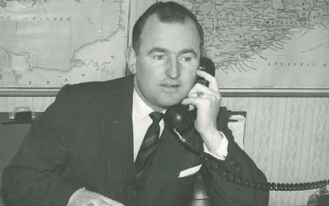
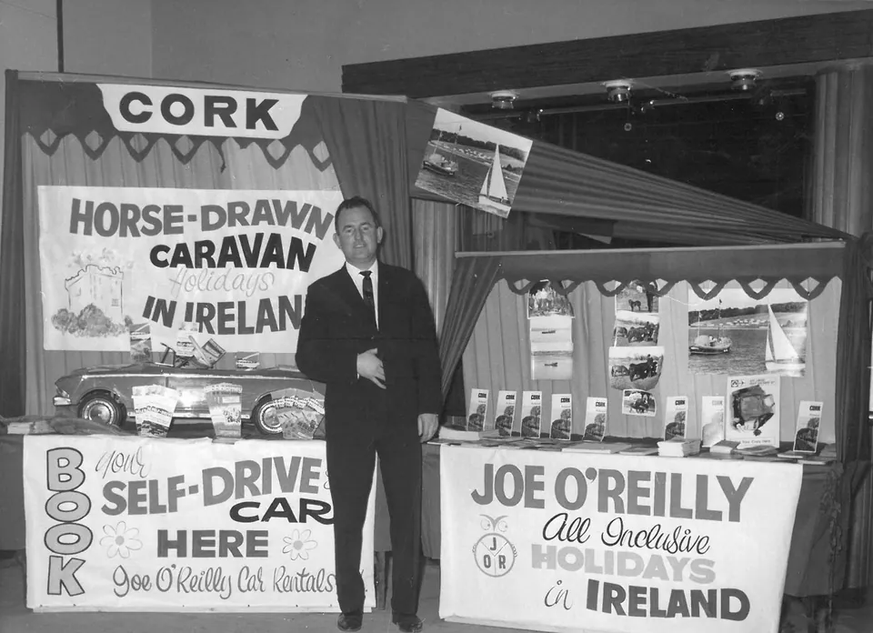

Joe O'Reilly | 1932–2007
Cette page est dédiée à Joe O'Reilly, notre fondateur et pionnier du tourisme irlandais.Joe O'Reilly | Entrepreneur et Légende du Tourisme Irlandais

L'industrie du voyage et le tourisme irlandais ont perdu l'un de leurs plus grands succès et des personnages hauts en couleur lors du décès prématuré de Joe O'Reilly.
Un entrepreneur bien avant que nous connaissions le sens du mot, il fut l'un des pionniers du tourisme irlandais. Il a beaucoup voyagé en Grande-Bretagne et en Europe continentale pour promouvoir le pays au début des années 1950 – à une époque où de nombreux Européens confondaient l'Irlande avec l'Islande. Ceux qui connaissaient l'Irlande à ce stade en savaient à peine plus que son association avec Eamonn De Valera, Arthur Guinness, la couleur verte, et que la plupart de leurs intempéries étaient causées par les vents qui soufflaient sur la mer depuis l'Irlande. Dans les années 1970 et 1980, l'Irlande est devenue plus connue, malheureusement pour les mauvaises raisons, car les conflit du nord ont été largement rapportés.
C'est dans ce contexte que des gens comme Joe ont traversé les autoroutes et les routes secondaires, labourant parfois des sillons très solitaires et, ce faisant, jetant les bases de ce qui est maintenant l'une de nos industries les plus importantes et les plus prospères. Plus tard, il a contribué à un niveau stratégique en tant que président de la région touristique de Cork / Kerry.
Joe a fait ses bagages plus dans ses 74 ans que quiconque que je connaisse. En quittant Cavan pour les lumières vives de Dublin et le secteur de la location de voitures, il a rapidement fait sentir sa présence, à la fois littéralement et métaphoriquement. Avec un mégaphone sur le toit de sa voiture, faisant exploser les mérites de son entreprise, des plaintes pour nuisance publique ont été reçues par les autorités de la Garde. Il a finalement été appréhendé par l'un de ces grands et impressionnants Gardaí en poste le O'Connell Bridge (les feux de circulation n'étaient pas encore apparus). Il l'a rapidement conquis, aidé par le fait qu'ils viennent tous les deux de la même région - et c'est ainsi qu'a commencé une amitié de 50 ans !
L'Irlande devint bientôt trop petite pour contenir ses talents exubérants. Comme tant de ses contemporains, il emmena le navire des émigrants en Amérique mais, contrairement à l'époque, il avait un billet de première classe payé pour lui par un riche Américain qui était énormément impressionné par un voyage de vacances en Irlande que Joe avait organisé pour lui. A l'aide d'un costume emprunté, il était convenablement habillé pour dîner à la table du capitaine - et en un rien de temps, il est devenu le meilleur vendeur d'Avis à New York.
En épousant Sheila, il est retourné en Irlande et a créé un certain nombre d'entreprises en location de voitures, centre équestre, caravanes hippomobiles, tourisme entrant et sortant. Par la parole dure, une planification méticuleuse, l'innovation et une approche hautement personnalisée, tous ont eu beaucoup de succès.
Ses talents d'innovateur sont parfaitement illustrés par le fait qu'il conduise l'une de ses caravanes tirées par des chevaux. les Champs Élysées à Paris, flanqué de deux gendarmes rôdeurs. L'événement a gagné une publicité très recherchée et inestimable pour le tourisme irlandais parce qu'une photo parut le lendemain matin à la une du Monde, le prestigieux quotidien français. À l'époque, Joe était l'heureux propriétaire de 100 chevaux. À quel point il devrait quelques années plus tard devenir chevalier dans l'ordre équestre de Saint Sylvestre.
Il a également reçu l'honneur de chevalier du Saint-Sépulcre. Ces honneurs seraient en partie liés aux dizaines de milliers de personnes dont il a organisé et conduit des pèlerinages à Lourdes, Fatima et en Terre Sainte, mais aussi à sa générosité envers l'église, à la maison et sur ces missions. En effet, son dernier vol était vers le Nigeria trois mois avant cela pour célébrer l'ouverture d'un bâtiment nommé en son honneur. Il abrite aujourd'hui 90 séminaristes.
De plus, ses activités étaient tout aussi importantes dans sa jeunesse, comme escorter la déesse du sexe Jayne Mansfield autour des lacs de Killarney, ou en tant qu'accompagnateur musical d'Elizabeth Taylor et Richard Burton. Il a également conduit Gregory Peck à travers Dublin et a passé une nuit en ville avec Dean Martin, sans parler de diverses rencontres avec The Three Stooges. Pour équilibrer le tout, et en vue de son dernier voyage, il a également réussi à prendre le petit-déjeuner avec le Pape Jean-Paul II dans ses appartements privés. Il ne fait aucun doute qu'il joue maintenant un quatre balles avec trois anciens membres de la Joe O'Reilly Golfing Society (JORGS), dont deux étaient également des doyens de l'industrie du voyage, à savoir Martin Dully et Paddy Fitzpatrick.
Ar dheis De go raibh a anam dilis.
MD
Cette histoire a été publiée pour la première fois dans l'édition de février 2007 de Irish Trade Travel News.